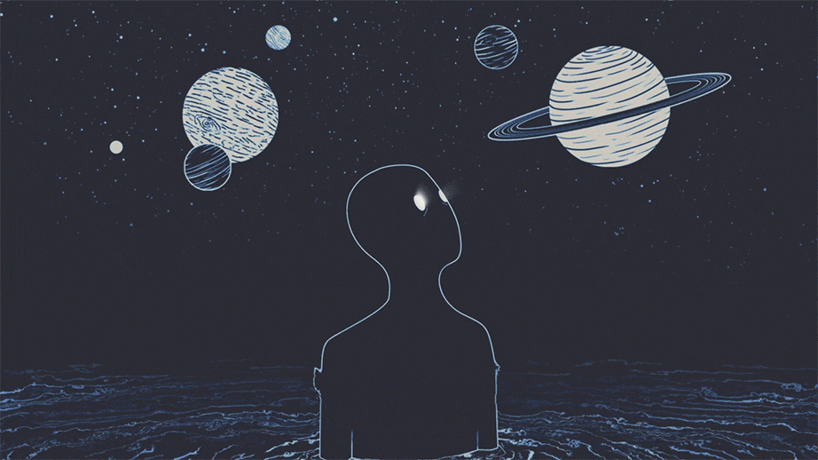

The Rise of Space Tourism
In a world blooming with aspiring scientists and engineers, we have seen a rise in interest in space and the endless possibilities that it holds for commercial use, scientific discovery, and technological advancement.
With these new and bright minds entering the space industry comes with them new ideas and ideals. Commercial space utilization (CSU) and space tourism have become an up and coming topic in the last decade and has been something people have strived for being a reality. Examples being; the idea of space mining for new and more materials that we are running out of on Earth, and the allowing of citizens to buy tickets to go into space for leisure are just two ideas that fall under intensions for CSU and space tourism.
With these ideas, among many others, comes the perceived downsides. Many citizens and most importantly, public figures, have come out with their opinions against CSU and space tourism. Stating their concerns and questioning the intent or even need for space tourism and CSU, these people have put a damper on the “final frontier,” making many people question their aspirations in the field of space travel and discovery. From the safety questions to even asking “what’s the point?” public figures and citizens have many valid reasons to question the intent and need for CSU and space tourism. Even with much backlash and questions against space tourism and exploration, we stand to gain exponentially more by the exploring, touring, and utilizing of space resources, rather than leaving the possibilities and treasures of space untapped.
